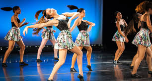
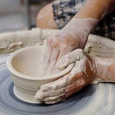
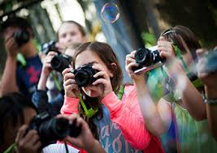

-
Arts & Crafts Camp
MOCA offers classes to ages 4-14. Register for weekly sessions over summer break. Experienced art educators will teach your child a variety of art skills while providing historical context through each project. All Summer Art Camp sessions are hosted at MOCA Jacksonville located Downtown at 333 North Laura Street.
-

Dance Camp
South Florida Dance Company will provide dance classes 3 or 2 times a week for 6 weeks. They teach Jazz, Leaps & Turns, Modern, Hip Hop, and Classical Ballet. A mini performance will be held at the end of camp.
-

Pottery Camp
Ages 5 and up can join Arts Ablaze Studio to create pottery with their hands and learn the art of the throwing on the wheel. As well as glass fusing, mosaics and tshirt design. Weekly or daily registration available.
-

Film & Photography Camp
It started as a weekly meet up for a small group of enthusiastic young filmmakers and is celebrating 10 years of summers. Florida Film Academy has classes for ages 5-18 and will teach Animation, Movie Make Up, Prosthetics, Acting.